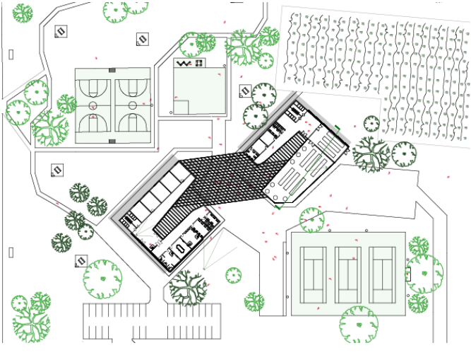

Second Year
"Form follows function"
LOUIS SULLIVAN
This design is an ecology center located in Commons Ford Ranch. Within its program it has three main categories; admin community, and support. The idea was to be able to have a place where people that are visiting the park are able to learn about the plant life and the environment around them. There was a thought process that starting forming while thinking of what the design might look like. Initially it started with checking off the boxes of what was needed for the program. After I was able to arrange them in a way that made sense circulation wise. After coming up with the set program functionalities and where they were going to be placed I then started thinking about how the outside design can start to react to the environmental system around the facility.
CENTER FOR NEIGHBORHOOD RESILIENCE
Good design is as little design as possible.
The images shows the upper level that has an atrium allowing the natural sunlight to alluminate the in- terior. Making this choice led the to the idea of putting the main gathering space in the middle of the first floor right under the skylight. The staircase allows people that work there or are just vist- ing to be able to get to the second floor while also being able to sit and rest on the left side of the staircase. The main point of the building was to be able to house the neccessities of the program but also inspire the people visit- ing to roam around in the surrounding space. On the second floor there is a balcony that is connected to the uper floor of the facility and is accessed by doors that are able to rotate and open up the connection between the interior and the exterior.